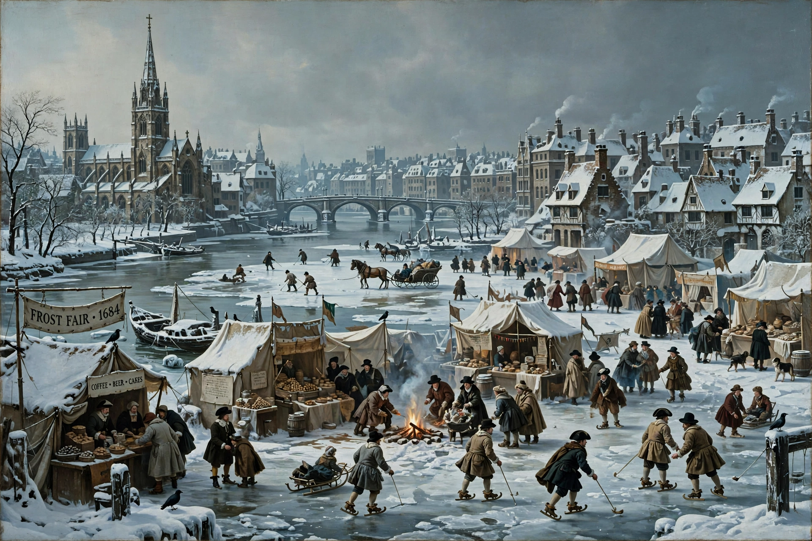

| Period | Regional, broadly c. 1300–1850 |
|---|---|
| Preceded by | Medieval Warm Period |
The Little Ice Age (LIA) was a period of regional cooling, particularly in the North Atlantic, that occurred after the Medieval Warm Period. It was not a true global ice age; temperatures varied by region and time, with several especially cold phases roughly between the 16th and 19th centuries.
Evidence comes from glacier advances, tree rings, ice cores, and historical records: the River Thames froze for frost fairs in London, Dutch canals froze for skating, Norse settlements in Greenland declined, and harvest failures and famines occurred in parts of Europe. Average Northern Hemisphere temperatures may have been about 0.3–0.6 °C below modern values at the coldest phases.
Proposed causes include clusters of large volcanic eruptions, reduced solar activity (notably the Maunder Minimum, 1645–1715), changes in ocean circulation, and internal climate variability, with feedbacks from sea ice and snow cover.